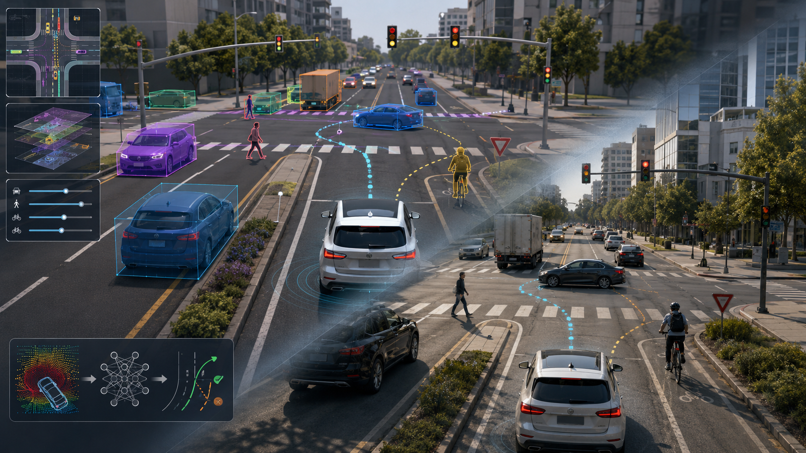

Direction 01
Closed-loop Interactive Simulation and Scenario Generation
We construct simulation and generative systems with behavioral plausibility, visual realism, physical consistency, and editability. This direction provides high-quality training and validation environments for downstream risk reasoning, decision learning, and sim-to-real transfer.